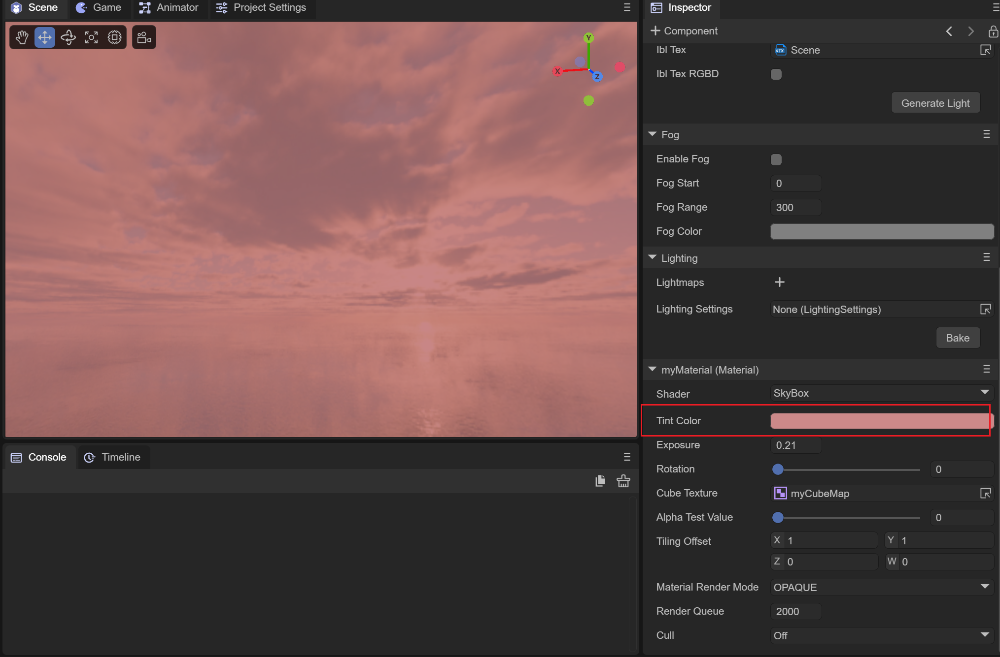
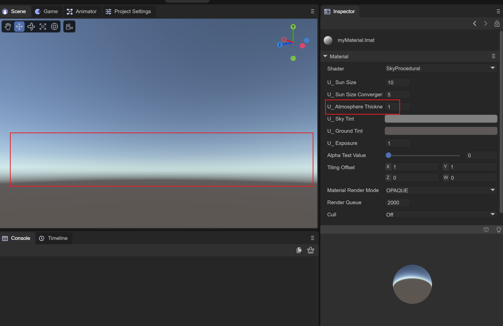

天空材质
Author: Charley
天空材质是LayaAir引擎中专门用于天空渲染的材质类型。引擎提供了三种天空材质：天空盒材质（SkyBoxMaterial）、全景天空材质（SkyPanoramicMaterial）和程序化天空材质（SkyProceduralMaterial），分别对应不同的天空实现方案。本篇文档将统一介绍这三种天空材质的通用属性和各自特有属性。
一、天空材质概述
1.1 天空渲染基础
在3D场景中，天空通常由一个特殊的网格和对应的天空材质组成。LayaAir引擎提供了两种天空网格：
- 天空盒（SkyBox）：立方体网格，使用立方体映射方式；
- 天空穹（SkyDome）：球形网格，使用球面映射方式，可展现更真实的曲面天空效果，但顶点更多、性能消耗略大。
天空材质决定了天空的视觉表现形式，不同的天空材质类型需要不同的纹理输入。
1.2 三种天空材质
| 材质类型 | 类名 | 纹理要求 | 适用网格 | 说明 |
|---|---|---|---|---|
| 天空盒材质 | SkyBoxMaterial |
立方体纹理（TextureCube） | 天空盒/天空穹 | 使用6面立方体贴图 |
| 全景天空材质 | SkyPanoramicMaterial |
2D全景纹理（Texture2D） | 天空盒/天空穹 | 使用一张全景图片 |
| 程序化天空材质 | SkyProceduralMaterial |
无需纹理 | 仅天空穹 | 通过参数程序化生成 |
1.3 通用属性
三种天空材质共享以下通用属性：
| 属性 | 类型 | 说明 |
|---|---|---|
exposure |
number | 曝光强度，控制天空的整体亮度 |
tintColor |
Color | 颜色色调，对天空整体施加颜色滤镜 |
rotation |
number | 旋转角度，绕Y轴旋转天空 |
注意：
SkyProceduralMaterial没有tintColor和rotation属性，但提供了专有的天空颜色和地面颜色属性。
二、天空盒材质（SkyBoxMaterial）
天空盒材质使用一张立方体纹理（TextureCube，由6张无缝纹理组合而成）来渲染天空。这是最经典的天空渲染方式。
2.1 属性详解
| 属性 | 类型 | 说明 |
|---|---|---|
textureCube |
TextureCube | 天空盒纹理，由前、后、左、右、上、下6张贴图组成 |
exposure |
number | 曝光强度 |
tintColor |
Color | 颜色色调 |
rotation |
number | 旋转角度 |

（图2-1）2.2 立方体纹理
天空盒材质的核心是立方体纹理（TextureCube），它由6张图片拼接而成，分别对应立方体的6个面。在IDE中，可以通过创建立方体贴图（CubeMap）资源来制作。
 （图2-2）
（图2-2）
2.3 代码示例
// 创建天空盒材质
let skyBoxMat = new Laya.SkyBoxMaterial();
// 设置曝光和颜色
skyBoxMat.exposure = 1.0;
skyBoxMat.tintColor = new Laya.Color(1, 1, 1, 1);
skyBoxMat.rotation = 0;
// 加载立方体纹理
Laya.loader.load("res/sky/skyBox.ltcb").then((texCube: Laya.TextureCube) => {
skyBoxMat.textureCube = texCube;
});
// 设置到场景的天空渲染器
let skyRenderer = scene3D.skyRenderer;
skyRenderer.material = skyBoxMat;
skyRenderer.mesh = Laya.SkyBox.instance;
三、全景天空材质（SkyPanoramicMaterial）
全景天空材质使用一张2D全景图片（通常是等距柱状投影的HDR或普通图片）来渲染天空。相比天空盒材质只需一张图片即可，资源管理更加便捷。
3.1 属性详解
| 属性 | 类型 | 说明 |
|---|---|---|
panoramicTexture |
Texture2D | 全景天空纹理（等距柱状投影格式） |
exposure |
number | 曝光强度 |
tintColor |
Color | 颜色色调 |
rotation |
number | 旋转角度 |
3.2 全景纹理
全景天空纹理是一张将360度全景视图展开为矩形的2D图片。推荐使用HDR格式的全景图以获得更好的光照效果。 （图3-2)
3.3 代码示例
// 创建全景天空材质
let skyPanoMat = new Laya.SkyPanoramicMaterial();
// 设置曝光和颜色
skyPanoMat.exposure = 1.2;
skyPanoMat.tintColor = new Laya.Color(1, 1, 1, 1);
skyPanoMat.rotation = 45;
// 加载全景纹理
Laya.loader.load("res/sky/panoramic.hdr").then((tex: Laya.Texture2D) => {
skyPanoMat.panoramicTexture = tex;
});
// 设置到场景天空渲染器
let skyRenderer = scene3D.skyRenderer;
skyRenderer.material = skyPanoMat;
skyRenderer.mesh = Laya.SkyDome.instance;
四、程序化天空材质（SkyProceduralMaterial）
程序化天空材质不需要任何纹理，完全通过程序参数生成天空效果。它可以模拟真实的大气散射、太阳光照等自然天空现象。
注意：程序化天空材质只能使用球形网格（SkyDome），因为它依赖精细的顶点信息进行顶点着色。
4.1 属性详解
| 属性 | 类型 | 范围 | 说明 |
|---|---|---|---|
sunDisk |
number | 0/1/2 | 太阳状态：无(0)、精简(1)、高质量(2) |
sunSize |
number | 0~1 | 太阳尺寸 |
sunSizeConvergence |
number | 0~20 | 太阳尺寸收缩 |
atmosphereThickness |
number | 0~5 | 大气厚度 |
skyTint |
Color | — | 天空颜色 |
groundTint |
Color | — | 地面颜色 |
exposure |
number | 0~8 | 曝光强度 |
4.2 太阳状态（sunDisk）
sunDisk 属性控制太阳的渲染质量：
| 值 | 常量 | 说明 |
|---|---|---|
| 0 | SUN_NODE |
不显示太阳 |
| 1 | SUN_SIMPLE |
简化太阳，性能较好 |
| 2 | SUN_HIGH_QUALITY |
高质量太阳，效果最佳 |
 （图4-1）
（图4-1）
4.3 大气厚度（atmosphereThickness）
atmosphereThickness 属性模拟大气层的厚度。值越大，天空颜色越偏向暖色调（日落效果）；值较小时，天空呈现清澈的蓝色。

（图4-2）4.4 代码示例
// 创建程序化天空材质
let skyProMat = new Laya.SkyProceduralMaterial();
// 设置太阳为高质量模式
skyProMat.sunDisk = Laya.SkyProceduralMaterial.SUN_HIGH_QUALITY;
skyProMat.sunSize = 0.04;
skyProMat.sunSizeConvergence = 5;
// 设置大气参数
skyProMat.atmosphereThickness = 1.0;
skyProMat.skyTint = new Laya.Color(0.5, 0.5, 0.5, 1);
skyProMat.groundTint = new Laya.Color(0.369, 0.349, 0.341, 1);
skyProMat.exposure = 1.3;
// 设置到场景天空渲染器（必须使用SkyDome）
let skyRenderer = scene3D.skyRenderer;
skyRenderer.material = skyProMat;
skyRenderer.mesh = Laya.SkyDome.instance;
五、选择建议
| 需求 | 推荐材质 | 理由 |
|---|---|---|
| 使用现有天空贴图资源 | 天空盒材质 | 经典方案，兼容性好 |
| 使用全景照片作天空 | 全景天空材质 | 只需一张图片 |
| 动态天空效果（日出日落） | 程序化天空材质 | 可实时调节参数 |
| 最低资源占用 | 程序化天空材质 | 不需要纹理资源 |
| 追求真实照片级天空 | 全景天空材质 | HDR全景图效果最真实 |
六、注意事项
程序化天空的网格限制：
SkyProceduralMaterial只能与SkyDome（球形天空网格）配合使用，不能使用SkyBox（立方体天空网格）。天空盒贴图缝合：使用天空盒材质时，6张贴图需要严格无缝拼接，否则会在立方体边缘出现接缝。
HDR支持：全景天空材质支持HDR纹理，使用HDR全景图可以获得更好的动态范围和光照效果。
曝光控制：
exposure属性对三种天空材质都很重要，合理设置曝光值可以让天空与场景中的其他物体亮度协调一致。默认材质：每种天空材质都有
defaultMaterial静态属性，该默认材质仅供引擎内部使用，不应修改。